Shuffle block resolver: from a block ID to a byte range
component index | Shuffle writer | Shuffle reader
IndexShuffleBlockResolver implements the default sort-shuffle file format on the executor. On write, it commits the index and data for one map output. On read, it answers “which bytes in this map's file belong to reducer r?” It does not decide which map attempt won, discover a remote host, deserialize rows, or open a listening port.
Flow at a glance
- Block manager: Requests reducer 2's block from shuffle 7, map attempt 41.
- Block resolver: Reads offsets 40 and 65 from attempt 41's index.
- File segment: Points the caller to 25 bytes starting at offset 40 in the data file.
Key distinction: The tracker reports an estimated size for this block. The on-disk index, not that estimate, supplies its exact start and end.
Show the animated flow

The disk layout, with one worked lookup
Suppose input map partition 3 of shuffle 7 ran as task attempt 41. Its exact stored lengths, in reduce ID order, are [40, 0, 25] bytes. The logical block shuffle_7_41_2 is not a filename:
| File |
Contents for this example |
shuffle_7_41_0.data |
65 bytes. Reducer 0 occupies [0, 40), reducer 1 is empty, and reducer 2 occupies [40, 65). |
shuffle_7_41_0.index |
Four big-endian 64-bit offsets: [0, 40, 40, 65]. The final offset is the end of the data. For R reducers the index is 8 * (R + 1) bytes. |
| Optional checksum sidecar |
A checksum per reduce block when supplied, for corruption diagnosis; not needed to locate the bytes. Its name includes the algorithm. |
The _0 in both permanent filenames is a placeholder reduce ID, not an assertion that the file contains only reducer 0. The physical mapId is 41, not array slot 3 (these can coincide under the old fetch protocol). The resolver asks DiskBlockManager for each filename; the hash-based placement means the index and data need not be in the same subdirectory. For host-local reads it can resolve using explicit executor directories.
Commit before publish
SortShuffleManager creates a resolver for serving blocks and tracks map IDs it wrote per shuffle. The default LocalDiskShuffleExecutorComponents creates its own resolver for the disk writers. These are separate objects in this revision; they agree on a file format and directory mapping, not an in-memory map of every block's offsets.- A local disk output writer supplies
(shuffleId, mapId, exact partition lengths, optional checksums, temporary data file) to writeMetadataFileAndCommit. Inside a synchronized section, the resolver checks an existing index/data pair. If usable for that same file identity, it copies the existing lengths back to the caller and discards the duplicate temporary output. This is not the driver's selection between different attempt IDs.
- Otherwise it prefix-sums lengths starting at zero, writes the index through a temporary file, and renames staged data into place if present. Index/data commit errors propagate; writing the optional checksum after a successful data/index commit is best effort. The commit code serializes competing writers on the resolver; it is not one filesystem transaction across files. A completely empty map can commit a zero-offset index without a data file. Only after commit does the writer return a status to advertise.
Sequence diagram · Open full sizeText equivalent
sequenceDiagram
participant B as BlockManager
participant R as IndexShuffleBlockResolver
participant I as Map 41 index
participant D as Map 41 data
B->>R: getBlockData for shuffle 7, map 41, reduce 2
R->>I: Read longs at positions 16 and 24
I-->>R: Start 40, end 65
R-->>B: FileSegmentManagedBuffer for offset 40, length 25
B->>D: Consumer or transport reads that segmentOn a local or executor-served fetch, getBlockData uses the requested reduce ID and its successor (or the two endpoints of a ShuffleBlockBatchId). It seeks to 8 * start and 8 * end, closes the index channel, and returns a file-segment descriptor. Length is endOffset - startOffset; the compressed estimate from MapStatus is not an input. When the optional external shuffle service serves a remote request, its Java resolver reads the same format; it need not call the executor or keep that JVM alive.
Removal, failures, and diagnosis
SortShuffleManager.unregisterShuffle iterates its recorded map IDs and asks removeDataByMap to delete data, index, and configured checksum files. Manager shutdown also calls resolver.stop(), which is a no-op here; do not equate it with removing each shuffle. The resolver neither retries a lost file on another node nor recomputes a partition. Read or transfer failure is reported by the reader; the driver decides what to rerun.
Diagnostic: Given an error for shuffle_7_41_2, use the producing executor's local directories and search for the two _0 filenames, not _2.data or a file named after map index 3. For this example the index should be 32 bytes, its last offset 65, and its two entries for reducer 2 40 and 65. A missing index prevents lookup even if data still exists. Equal offsets denote an empty partition, not a missing file. Preserve live files when inspecting them.